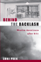

|

|
The End of White World Supremacy
Black Internationalism and the Problem of the Color Line
Bush, Roderick
Paul Sweezy Marxist Sociology Award from the American Sociological Association conference, 2010 |

|
Hapa Girl
A Memoir
Chai, May-lee
Honorable Mention at the 2007 Gustavus Myers Outstanding Book Awards Named one of 2008’s Notable Books in the Kiriyama Prize |

|
There Goes the 'Hood
Views of Gentrification from the Ground Up
Freeman, Lance
Winner of the Urban Affairs Association Best Book Award, 2007 |

|
Reshaping
Ethnic and Racial Relations in Philadelphia
Immigrants in a Divided City
Goode,
Judith and Jo Anne Schneider
Finalist for the Robert E. Park Award, Community and Urban
Section of the American Sociological Association, 1996 |

|
Black
Theatre
Ritual Performance in the African Diaspora
edited
by Harrison, Paul Carter, Victor Leo Walker II and Gus Edwards
Finalist for the George Freedley Memorial Award for an outstanding
book in theatre or another area of live performance from the
Theatre Library Association, 2002 |

|
The
Politics of Diversity
Immigration, Resistance, and Change in Monterey Park, California
Horton,
John
Robert E. Park Award, Community and Urban Section of the
American Sociological Association, 1996 |

|
The White Savior Film
Content, Critics, and Consumption
Hughey, Matthew W.
Southwest Sociological Association Outstanding Publication Award, 2016
|

|
Another Arabesque
Syrian-Lebanese Ethnicity in Neoliberal Brazil
Karam, John Tofik
Arab American National Museum Book Award in the Adult Non-Fiction Category, 2007
Winner of the Roberto Reis BRASA Book Award, 2008 |

|
Newcomers
in Workplace
Immigrants and the Restructing of the U.S Economy
edited
by Lamphere, Louise, Alex Stepick and Guillermo Grenier
Conrad Arensberg Award, American Anthropological Association,
1994 |

|
Orientals
Asian Americans in Popular Culture
Lee,
Robert G.
Best Book Award Winner Culture Studies/Popular Culture, Northeast
Popular Culture/American Culture Association, 2000
Honorable Mention for the John Hope Franklin Publication Prize
for the best-published book in American Studies from the American
Studies Association, 1999
Best Book Award for the Social Construction of Race, The American
Political Science Association, 1999 |

|
The
Making of Asian America through Political Participation
Lien,
Pei-te
Best Book published in the areas of Political Participation,
Voting, Elections, and Political Behavior in Racial/Ethnic
Politics by the Organized Section on Race, Ethnicity, and
Politics of the American Political Science Association (APSA).,
2002 |

|
Desis
in the House
Indian American Youth Culture in New York City
Maira,
Sunaina Marr
Honorable Mention for the Lora Romero First Book Publication
Prize from the American Studies Association, 2003 |

|
Cultural
Compass
Ethnographic Explorations of Asian America
edited
by Manalansan, IV, Martin F.
Cultural Studies Book Award, given by the Association for
Asian American Studies, 2000 |

|
Race Appeal
How Candidates Invoke Race in U.S. Political Campaigns
McIlwain, Charlton D., and Stephen M. Caliendo
Ralph J. Bunche Award, American Political Science Association, 2012
Selected as "'The Best of the Best' from the University Presses" Books For Public and High School Libraries" for the ALA Annual Conference, 2012
|

|
Homeboys
Gangs, Drugs, and the Prison in the Barrios of Los Angeles
Moore,
Joan W.
Winner of the Sidney Spivack Award, 1980 |

|
White
Boy
A Memoir
Naison,
Mark D.
Mark Naison is the recipient of the Poe Award for Literary
Excellence of the Bronx County History Society, 2004 |

|
Shifting Borders
Rhetoric, Immigration, and California’s Proposition 187
Ono,
Kent A. and John M. Sloop
Critical and Cultural Studies Division of the National Communication
Association's Book of the Year Award, 2004 |

|
Illegal Migrations and the Huckleberry Finn Problem
Park, John S.W.
Outstanding Academic Title, Choice, 2014 |

|
Behind the Backlash
Muslim Americans after 9/11
Peek, Lori
Midwest Sociological Society Distinguished Book Award, 2012
Best Book Award from the American Sociological Association's (ASA) section on Altruism, Morality, and Social Solidarity, 2013 |

|
Echoes
from the Holocaust
Philosophical Reflections on a Dark Time
edited
by Rosenberg, Alan and Gerald E. Myers
A Selection of the Jewish Book Club, 1990 |

|
Language
Policy and Identity Politics in the United States
Schmidt,
Sr., Ronald
"Best Book Award" from the American Political Science Association
Section on Race, Ethnicity and Politics for the category of
"Public Policies, Legal and Social Analysis of Racial and
Ethnic Politics", 2001 |

|
Poems
Performance Pieces Proses Plays Poetics
Schwitters,
Kurt, edited by Jerome Rothenberg, translated by Pierre Joris
Pen Center USA West Literary Award for Translation, 1994 |
|
Chinatown
The Socioeconomic Potential of an Urban Enclave
Zhou,
Min, foreword by Alejandro Portes
Honorable Mention Robert E. Park Award, American Sociological
Association, 1993 |
|